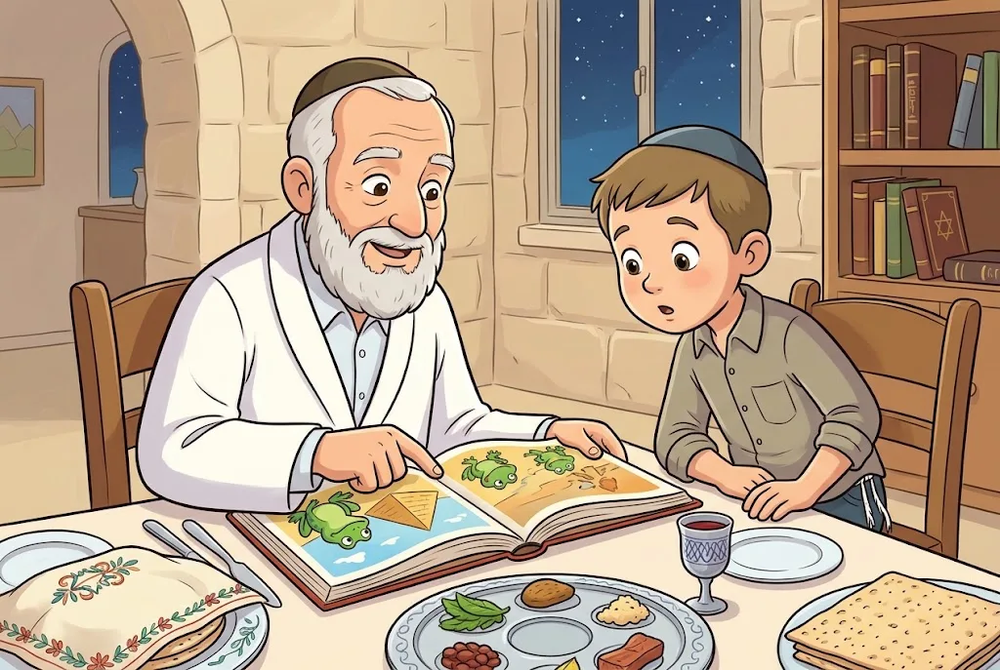
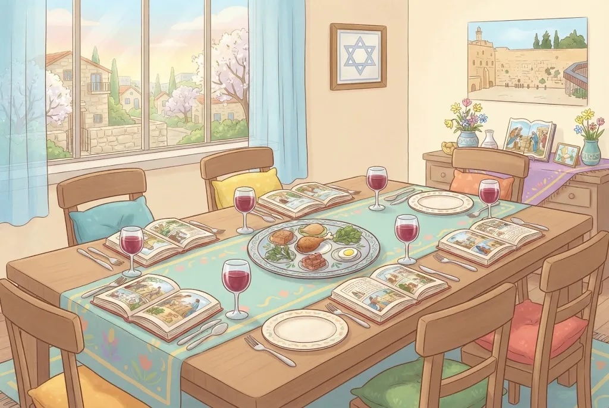

👨👦וְהִגַּדְתָּ לְבִנְךָ
מִצְוַת עֲשֵׂה מִן הַתּוֹרָה לְסַפֵּר בִּיצִיאַת מִצְרַיִם בְּלֵיל ט״ו בְּנִיסָן, וְעִקַּר הַמִּצְוָה לְסַפֵּר לַיְּלָדִים: ״וְהִגַּדְתָּ לְבִנְךָ״. גַּם מִי שֶׁאֵין לוֹ יְלָדִים – מְצֻוֶּה לְסַפֵּר. וְכָל הַמַּרְבֶּה לְסַפֵּר – הֲרֵי זֶה מְשֻׁבָּח.
בְּכָל יוֹם זוֹכְרִים אֶת יְצִיאַת מִצְרַיִם בִּקְרִיאַת שְׁמַע. אֲבָל בְּלֵיל הַסֵּדֶר מְסַפְּרִים בַּאֲרִיכוּת, לַיְּלָדִים, כְּשֶׁהַמַּצָּה וְהַמָּרוֹר מֻנָּחִים לְפָנֵינוּ, וּבְדֶרֶךְ שֶׁל שְׁאֵלָה וּתְשׁוּבָה.
💛 אַהֲבַת הַשֵּׁם: הַהוֹרִים מַעֲבִירִים לַיְּלָדִים אֶת ״לַפִּיד הַמָּסֹרֶת״: אֵיךְ נוֹצַר עַם יִשְׂרָאֵל, וְאֵיךְ בָּחַר בָּנוּ ה׳ לִהְיוֹת לוֹ לְעַם סְגֻלָּה. בַּלַּיְלָה הַזֶּה אַתָּה מְקַבֵּל אֶת הַלַּפִּיד – וְיוֹם אֶחָד תַּעֲבִיר אוֹתוֹ הָלְאָה.
👧גַּם נָשִׁים וּבָנוֹת
בְּמִצְוַת זְכִירַת יְצִיאַת מִצְרַיִם שֶׁבְּכָל יוֹם נָשִׁים פְּטוּרוֹת, אֲבָל בְּמִצְוַת הַסִּפּוּר בְּלֵיל הַסֵּדֶר – נָשִׁים חַיָּבוֹת. גַּם בְּאַרְבַּע כּוֹסוֹת נָשִׁים מְצֻוּוֹת, כְּמוֹ בְּכָל מִצְווֹת לֵיל הַסֵּדֶר, וְהַמִּצְוָה לִשְׁתּוֹת יַיִן מְשַׂמֵּחַ.
לִפְנֵי פֶּסַח מִשְׁתַּדְּלִים לִקְנוֹת בְּגָדִים חֲדָשִׁים לַיְּלָדִים וּלְכָל בְּנֵי הַבַּיִת, וְלִפְנֵי כָּל חַג מִצְוָה לִקְנוֹת לַנָּשִׁים וְלַבָּנוֹת בְּגָדִים וְתַכְשִׁיטִים – כְּדֵי לְשַׂמֵּחַ אוֹתָן.
💛 אַהֲבַת הַשֵּׁם: הַמַּטָּרָה שֶׁל לֵיל הַסֵּדֶר הִיא שֶׁבְּלֵב הַבָּנִים וְהַבָּנוֹת יִהְיֶה חֵשֶׁק לְהִשְׁתַּיֵּךְ לְעַם יִשְׂרָאֵל וּלְדַבֵּק בַּה׳. כָּל בַּת בְּיִשְׂרָאֵל שׁוּתָפָה מְלֵאָה בַּסִּפּוּר וּבַשִּׂמְחָה.
❓מַה נִּשְׁתַּנָּה
מְסַפְּרִים בְּדֶרֶךְ שֶׁל שְׁאֵלָה וּתְשׁוּבָה, כִּי הַשְּׁאֵלָה פּוֹתַחַת אֶת הַלֵּב. לָכֵן מְחַלְּקִים לַיְּלָדִים בִּתְחִלַּת הַסֵּדֶר אֱגוֹזִים וּמִינֵי מְתִיקָה, וּמְשַׁנִּים מֵהָרָגִיל – כְּדֵי שֶׁיִּתְפַּלְּאוּ וְיִשְׁאֲלוּ ״מַה נִּשְׁתַּנָּה״.
בְּ״מַה נִּשְׁתַּנָּה״ שׁוֹאֲלִים עַל הַמַּצָּה, הַמָּרוֹר, הַטִּבּוּל פַּעֲמַיִם וְהַהֲסִבָּה. כְּשֶׁאֵין יְלָדִים – שׁוֹאֵל הַצָּעִיר שֶׁבַּמְּסֻבִּים. וַאֲפִלּוּ מִי שֶׁעוֹשֶׂה סֵדֶר לְבַד – שׁוֹאֵל אֶת עַצְמוֹ.
💛 אַהֲבַת הַשֵּׁם: גַּם בַּמִּשְׁפָּחָה הֲכִי חֲכָמָה פּוֹתְחִים בִּשְׁאֵלָה. הַשְּׁאֵלָה ״לָמָּה עַם יִשְׂרָאֵל שׁוֹנֶה?״ דּוֹחֶפֶת אוֹתָנוּ לְהָבִין עוֹד וָעוֹד אֶת אַהֲבַת ה׳ אֵלֵינוּ.
👦כְּנֶגֶד אַרְבָּעָה בָּנִים
הַתּוֹרָה מְצַוָּה לְהַסְבִּיר לְכָל בֵּן לְפִי הַכִּשְׁרוֹן שֶׁלּוֹ. לֶחָכָם, שֶׁשּׁוֹאֵל בְּפֵרוּט, עוֹנִים בַּאֲרִיכוּת. לָרָשָׁע, שֶׁאֵינוֹ מַרְגִּישׁ שֻׁתָּף, מַסְבִּירִים אֶת סְגֻלַּת יִשְׂרָאֵל – אוּלַי יִכָּנְסוּ הַדְּבָרִים לְלִבּוֹ. לַתָּם מְסַפְּרִים עַל הַמַּכּוֹת הַגְּדוֹלוֹת וְעַל פַּרְעֹה שֶׁהִקְשָׁה אֶת לִבּוֹ.
וְלַבֵּן שֶׁאֵינוֹ יוֹדֵעַ לִשְׁאֹל – מְעוֹרְרִים אוֹתוֹ בִּדְבָרִים מוּחָשִׁיִּים: ״בַּעֲבוּר זֶה״ – בִּזְכוּת הַמַּצָּה וְהַמָּרוֹר שֶׁלְּפָנֵינוּ. לָכֵן הַקְּעָרָה עַל הַשֻּׁלְחָן.
💛 אַהֲבַת הַשֵּׁם: אַף יֶלֶד לֹא נִשְׁאָר בַּחוּץ. תְּפִלָּתֵנוּ שֶׁכָּל הַבָּנִים יִגְדְּלוּ וְיִהְיוּ חֲכָמִים, וְיִשְׂאוּ אֶת לַפִּיד הַמָּסֹרֶת.
📜נֹסַח הַהַגָּדָה
אַנְשֵׁי כְּנֶסֶת הַגְּדוֹלָה, בִּתְחִלַּת יְמֵי הַבַּיִת הַשֵּׁנִי, תִּקְּנוּ אֶת נֹסַח הַהַגָּדָה – כְּדֵי שֶׁלֹּא נַשְׁמִיט שׁוּם יְסוֹד מֵהַסִּפּוּר. בְּמֶשֶׁךְ הַדּוֹרוֹת הוֹסִיפוּ הַתַּנָּאִים, הָאָמוֹרָאִים וְהַגְּאוֹנִים, וְלִפְנֵי כִּשְׁמוֹנֶה מֵאוֹת שָׁנָה הִתְקַבֵּל נֹסַח אֶחָד בְּכָל קְהִלּוֹת יִשְׂרָאֵל.
הַמַּטָּרָה שֶׁל הַסֵּדֶר: שֶׁמִּתּוֹךְ הַסִּפּוּר יִהְיֶה בְּלֵב הַיְּלָדִים חֵשֶׁק לִהְיוֹת חֵלֶק מֵעַם יִשְׂרָאֵל, לָגוּר בָּאָרֶץ הַמֻּבְטַחַת, לְדַבֵּק בַּה׳ וּלְקַיֵּם אֶת מִצְווֹתָיו.
💛 אַהֲבַת הַשֵּׁם: מִי שֶׁאוֹמֵר אֶת הַהַגָּדָה מִצְטָרֵף לְשַׁרְשֶׁרֶת אֲרֻכָּה שֶׁל דּוֹרוֹת. וְכָל הַמּוֹסִיף לְפָרֵשׁ וּלְסַפֵּר – הֲרֵי זֶה מְשֻׁבָּח.
🐸מִגְּנוּת לְשֶׁבַח וְעֶשֶׂר הַמַּכּוֹת
פּוֹתְחִים אֶת הַסִּפּוּר בִּגְנוּת וּמְסַיְּמִים בְּשֶׁבַח: ״עֲבָדִים הָיִינוּ לְפַרְעֹה״, וְ״מִתְּחִלָּה עוֹבְדֵי עֲבוֹדָה זָרָה הָיוּ אֲבוֹתֵינוּ״ – וּבְסוֹף זָכִינוּ לְחֵרוּת וְלֶאֱמוּנָה שְׁלֵמָה. מִתּוֹךְ הַחֹשֶׁךְ רוֹאִים טוֹב יוֹתֵר אֶת הָאוֹר.
בַּאֲמִירַת ״דָּם וָאֵשׁ וְתִימְרוֹת עָשָׁן״, עֶשֶׂר הַמַּכּוֹת וּ״דְּצַ״ךְ עֲדַ״שׁ בְּאַחַ״ב״ מַטִּיפִים מְעַט יַיִן מֵהַכּוֹס – שֵׁשׁ עֶשְׂרֵה פְּעָמִים. יֵשׁ מַטִּיפִים בָּאֶצְבַּע, וְיֵשׁ שׁוֹפְכִים מְעַט לִכְלִי שָׁבוּר.
💛 אַהֲבַת הַשֵּׁם: עֶשֶׂר הַמַּכּוֹת מְלַמְּדוֹת שֶׁיֵּשׁ דִּין וְיֵשׁ דַּיָּן. הָעוֹלָם נִבְרָא בַּעֲשָׂרָה מַאֲמָרוֹת – וּבָהֶם ה׳ שָׁבַר אֶת כֹּחַ מִצְרַיִם, וְאַחַר כָּךְ גִּלָּה לָנוּ עֲשֶׂרֶת הַדִּבְּרוֹת.

🗣️פֶּסַח, מַצָּה וּמָרוֹר
רַבָּן גַּמְלִיאֵל אָמַר: כָּל מִי שֶׁלֹּא אָמַר שְׁלֹשָׁה דְּבָרִים אֵלּוּ – פֶּסַח, מַצָּה וּמָרוֹר – לֹא יָצָא. הַפֶּסַח מְבַטֵּא אֶת סְגֻלַּת יִשְׂרָאֵל, הַמַּצָּה – אֶת הַחֵרוּת, וְהַמָּרוֹר – אֶת הַשִּׁעְבּוּד.
מִי שֶׁמְּהַרְהֵר בַּלֵּב – לֹא יָצָא, כִּי צָרִיךְ לְהַגִּיד בַּפֶּה. אֲבָל מַסְפִּיק שֶׁאֶחָד אוֹמֵר בְּקוֹל וְהַשְּׁאָר שׁוֹמְעִים. וְהוֹרִים שֶׁרוֹאִים שֶׁהַיְּלָדִים נִרְדָּמִים – אוֹמְרִים לָהֶם קֹדֶם אֶת שְׁלֹשֶׁת הַדְּבָרִים הָאֵלֶּה.
💛 אַהֲבַת הַשֵּׁם: בְּכָל דּוֹר אָנוּ חוֹזְרִים לִשְׁלֹשָׁה דְּבָרִים פְּשׁוּטִים וְעֲמֻקִּים. בָּהֶם כָּל הַסִּפּוּר: הָיִינוּ עֲבָדִים, וְה׳ גְּאָלָנוּ בְּאַהֲבָה.
🧠 בְּדֹק אֶת עַצְמְךָ
הַבֵּן הָרָשָׁע אוֹמֵר: ״מָה הָעֲבֹדָה הַזֹּאת לָכֶם״. מָה לוֹמְדִים מִכָּךְ שֶׁהַתּוֹרָה מְצַוָּה לַעֲנוֹת לוֹ?
💡 הַתּוֹרָה מְצַוָּה לְהִתְיַחֵס גַּם אֵלָיו וּלְהַסְבִּיר לוֹ אֶת סְגֻלַּת יִשְׂרָאֵל, כִּי תָּמִיד צָרִיךְ לְהַאֲמִין שֶׁאוּלַי יִכָּנְסוּ הַדְּבָרִים לְלִבּוֹ, וְהוּא יַעֲבִיר אֶת לַפִּיד הַמָּסֹרֶת הָלְאָה.
הַבֵּן הַתָּם שׁוֹאֵל רַק: ״מַה זֹּאת?״. מָה מַסְבִּירִים לוֹ?
💡 לַתָּם מַסְבִּירִים לְפִי הֲבָנָתוֹ אֶת הַמְּאֹרָעוֹת הַמַּרְשִׁימִים: הַמַּכּוֹת הַגְּדוֹלוֹת וְקַשְׁיוּת לִבּוֹ שֶׁל פַּרְעֹה, שֶׁנִּשְׁבְּרָה בְּמַכַּת בְּכוֹרוֹת. הַתְּשׁוּבָה הָאֲרֻכָּה וְהַמְּפֹרֶטֶת – לֶחָכָם.
מִי חַיָּב בְּסִפּוּר יְצִיאַת מִצְרַיִם וּבְאַרְבַּע כּוֹסוֹת בְּלֵיל הַסֵּדֶר?

💡 בְּמִצְוַת הַסִּפּוּר בְּלֵיל הַסֵּדֶר נָשִׁים חַיָּבוֹת, אַף שֶׁמִּזְּכִירַת יְצִיאַת מִצְרַיִם שֶׁבְּכָל יוֹם הֵן פְּטוּרוֹת. וְגַם בְּאַרְבַּע כּוֹסוֹת נָשִׁים מְצֻוּוֹת, כְּמוֹ בְּכָל מִצְווֹת לֵיל הַסֵּדֶר.
📚 עוֹד חָמְרֵי לִמּוּד עַל הֲלָכָה – חִנָּם, בַּמַּאֲגָר הַקּוֹל הַחֲמִישִׁי:
kol-toda.co.il/halacha
הַמַּאֲגָר הַמָּלֵא: kol-toda.co.il
הַמַּאֲגָר הַמָּלֵא: kol-toda.co.il